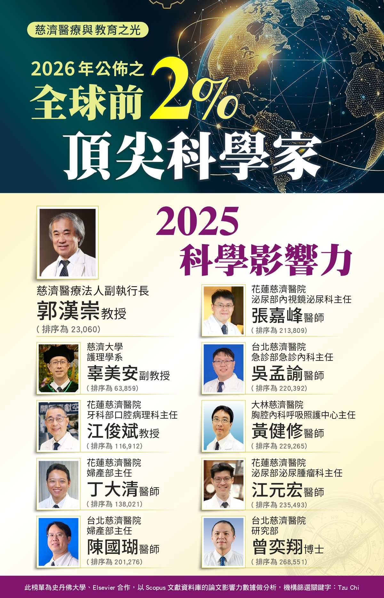

慈濟21位頂尖科學家入選創新高 泌尿腎臟醫學表現亮眼

可樂電子報小編/編輯
美國史丹佛大學（Stanford University）與國際學術出版機構Elsevier公布2025年「全球前2%頂尖科學家」（World’s Top 2% Scientists）年度科學影響力榜單，慈濟醫療與教育體系共有21位學者入選，較2024年增加5位、成長31.3%，創下歷年新高。入選者涵蓋臨床醫學、護理、生物統計等領域，泌尿醫學與腎臟內科各有4位學者上榜，另有6位是首度進榜的新面孔。

攤開歷年名單，慈濟體系2019年有3位學者入選，2020年增至7位，2022年達13位，2024年為16位，2025年再推升至21位，六年間入選人數成長為7倍。人數穩定爬升，反映各院區研究量能與跨院合作同步擴張，也讓慈濟在國際學術社群的能見度逐年提高。

以院區分布來看，花蓮慈濟醫院9位，包括郭漢崇、江俊斌、丁大清、張嘉峰、江元宏、徐邦治、林于立、張宇勳與王仁宏；台北慈濟醫院6位，為陳國瑚、吳孟諭、曾奕翔、楊緒棣、洪思群及余麗嬌；大林慈濟醫院有黃健修、江瑞坤、蔡任弼；台中慈濟醫院為廖光福；慈濟大學則是辜美安與賴惠玲。
泌尿醫學領域由花蓮慈濟醫院郭漢崇、張嘉峰、江元宏，以及台北慈濟醫院楊緒棣入榜。郭漢崇連續7年入選，2025年全球排名第23,060名，是慈濟體系當年度排名最前面的學者；張嘉峰連續4年入選，楊緒棣則是首次進榜。腎臟內科另有花蓮慈濟醫院徐邦治、林于立，台北慈濟醫院洪思群及大林慈濟醫院蔡任弼，其中蔡任弼已連續6年入選，徐邦治連續5年，林于立與洪思群都是2025年首度上榜。
新秀表現同樣受到關注。除了楊緒棣、林于立與洪思群，另有3位首次入選的學者，分別是台北慈濟醫院急診部吳孟諭、新陳代謝暨內分泌科余麗嬌，以及花蓮慈濟醫院生物統計分析師王仁宏，從急重症醫療、慢性病照護到研究數據分析，各有專業貢獻。21位入選者中，有6位是慈濟大學畢業生，包括花蓮慈濟醫院張嘉峰、江元宏、林于立、張宇勳，台北慈濟醫院吳孟諭與大林慈濟醫院蔡任弼，他們畢業後分別在不同院區投入臨床服務與學術研究，讓慈濟教育與醫療體系的人才培育形成一條完整路徑。
從資深學者年年入榜，到新進研究者嶄露頭角，2025年的成績既反映研究人才數量的成長，也顯示醫療、教育與研究彼此支撐的發展方向。慈濟醫療志業表示，未來將持續深化跨院區學術合作，強化研究支持與人才培育，讓臨床研究與醫療實務互相帶動，把研究成果轉化為提升醫療品質與病人照護的力量。此外，慈濟體系另有郭漢崇、江俊斌等8位學者入選終身科學影響力排行榜。
資料來源：Stanford University／Elsevier「全球前2%頂尖科學家」2025年單一年度科學影響力榜單（Single-year）及慈濟體系歷年入選資料分析。
🌟 掌握花蓮在地第一手資訊・歡迎訂閱追蹤
深度紀實報導、在地精采影音專題，第一時間接收最新消息！